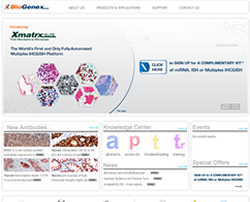

| Client: BioGenex Life Sciences Pvt. Ltd. |
Technologies Used: |
| Joomla, VirtueMart, DocMan, PHP, |
| Javascript/HTML/CSS, Jquery |
The Problem:
Client wanted to develop a web based product showcase and eCommerce application with the following attributes:
- User friendly manner product showcase with easy navigation
- Intuitive request for quote & easy search experience
- Knowledge sharing platform for molecular diagnostics
- Context customization based on user location/ geography
- State of the art user experience which positions BioGenex as a brand associated with innovation.
Our Solution:
Byteridge developed a eCommerce application using open source CMS Joomla and various extensions.The VirtueMart eCommerce extension was significantly modified to meet unique client requirements.
The platform was enhanced beyond eCommerce portal to even showcase client’s intellectual property and corporate information.
IMPACT
Greater online experience for users resulted in higher traffic with increased number of enquiries for various products listed on the website.
Easy management of the content on website without program updates